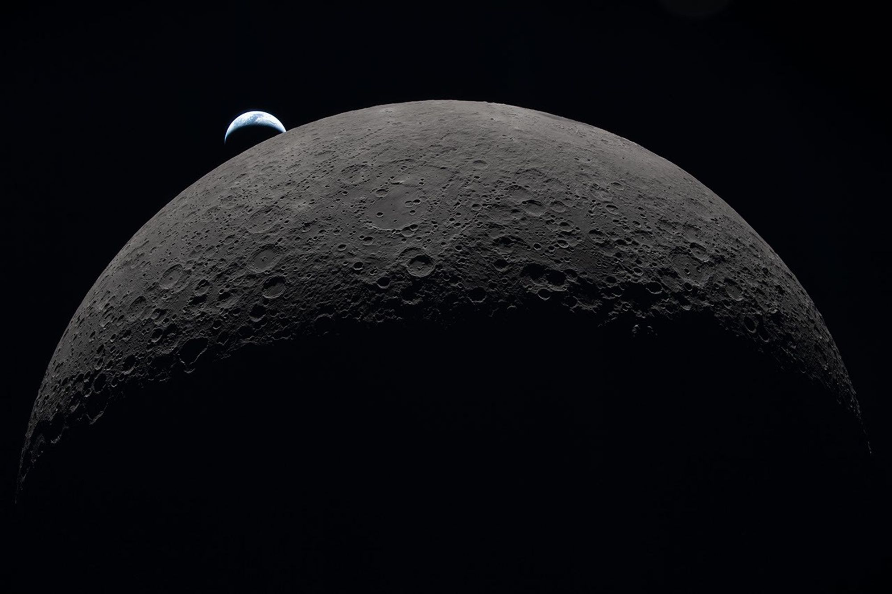
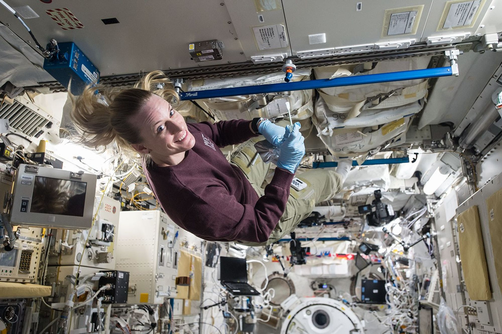

QUIET SIGNAL / RESEARCH REPORT 01 24 AUG 2026
LUNAR SOUTH POLE · MICROBIAL SURVIVAL · PLANETARY PROTECTION
月球南极的微生物足迹
一份关于潜在可存活生态位、证据边界与载人探索前污染基线的完整科研解读
来源与结论边界
先区分哪些结论有直接证据，
这份解读围绕 Saxena 等人在 Science Advances 发表的研究《Potential survivable niches for microbial life on the lunar south pole》展开，重点解释研究问题、证据结构、结论边界及其对载人探索的含义。
论文题名、作者、摘要、期刊、卷期、DOI、开放许可和参考文献计数可由 Crossref、OpenAlex 与 PubMed 交叉确认；NASA Science 的官方解读公开了五类微生物、三个模拟地点、数据与模型组合、主要发现以及作者对研究边界的说明。
公开资料未包含论文全文参数、补充材料和全部图表数值，因此逐物种阈值、置信区间与精确生态位面积不进入本次比较。所有陈述按证据强度分层，无法直接核对的定量细节不作为结论。
A 论文摘要直接支持 研究问题、总体方法、总体结论与边界。
B NASA 官方解读支持 研究对象、地点、数据来源、尺度与访谈。
C 权威背景来源支持 月球环境、LRO、行星保护与任务语境。
D 分析与实践建议 基于上述证据提出的测量、基线和任务流程建议。
04—06 研究究竟问了什么？ 摘要、研究问题、证据结构与必要区分
07—09 为什么是月球南极？ 低角度光照、地形阴影、温度与辐射
10—13 人类会带去什么？ 污染路径、五类微生物与“存活”的含义
14—19 模型怎样得到结果？ 耐受证据、遥感、三个地点与生态位尺度
20—24 结果如何改变任务判断？ 限制、现行政策、证据张力与测量框架
25—26
阅读建议 报告按连续阅读设计。若只看结论，请仍保留第 20 页“没有证明什么”和第 25 页“局限与未知”；它们不是免责声明，而是结论本身的一部分。
核心判断
月球整体仍然极端，
论文研究的不是月球是否存在原生生命，而是来自地球、尤其与人类和航天环境相关的微生物，是否可能在月球南极某些局地条件中保持生命状态。
多数未受保护的月表同时受到强紫外线、极端温度和高能粒子辐射影响，通常被视为不利于微生物存活。过去的载人月球探索全部发生在赤道附近，这种经验容易让人把赤道区域的环境直觉推广到整个月球。
研究者提出：极区的纬度、低太阳高度角与复杂地形可能产生长期低温、低紫外线通量的阴影区域。把微生物耐受证据与月球遥感、地形和高分辨率光照模型进行比较后，团队识别出可能允许短期存活的局地生态位。
NASA 的官方解读把这些区域描述为从数英里宽的坑底到航天员靴印大小不等。黑曲霉在五类研究对象中表现出较强紫外线耐受性，模型甚至允许它在部分有日照的区域保持存活。
这里的“存活”不包含增长概率；论文摘要使用的是隐生状态语境，即细胞可能维持生命，但只有在适居条件出现时才可能恢复生长。月球没有已知的大气、稳定液态水与适宜温度组合来支持这些微生物持续生长和繁殖。
研究的任务含义因此不是“月球会被生物占领”，而是：人类抵达后，某些地球来源的细胞可能比预想中保存得更久，从而干扰未来对月球化学、挥发物和潜在生物信号的出处判断。
一句话 要保护的不是“无菌月球”的想象，而是未来证据仍然能够被正确归因。
从一个错误问题开始
“月球有没有生命”
01 / 先排除
论文没有回答月球是否存在原生生命。
现有月球探测没有发现月球拥有自己的生命；这项研究也没有报告在月面检测到活细胞。研究对象来自地球，关注的是人类抵达后可能留下的微生物足迹。
02 / 再收紧
论文也没有证明地球微生物能在月球繁殖。
模型讨论的“存活”不包含生长与繁殖。论文摘要把结论限定在隐生状态，即细胞可能暂时维持生命，但月球环境并不因此成为可支持种群扩张的栖息地。
03 / 真正的问题
哪些局地环境，可能让被人类带去的微生物暂时没有死亡？
这是一个“环境条件是否落在已知耐受边界内”的比较问题，也是一个污染可追踪性问题。
这个问题的科学价值来自时间顺序。人类抵达以前，极区样品中的有机物、挥发物与化学异常有一套自然历史；人类抵达以后，航天服、栖息舱、推进系统、废弃物和采样工具会引入新的物质。如果没有抵达前基线和抵达后的活动记录，未来研究者可能无法判断某个信号来自月球自然过程、历史无人任务，还是新近载人活动。
因此，“是否存活”并不是孤立的生物学好奇心。它连接了遥感、微生物耐受、污染控制、样品科学和行星保护。只要细胞或其分子痕迹能够被保存，出处判断就会变得更困难。
输入 → 比较 → 输出
这是一项模型研究，
01 微生物耐受证据 从既有研究整理特定微生物能够承受的热与紫外线条件。
已发表实验与航天环境观察 02 月球环境证据 使用 LRO 高程、温度与月球南极地形数据描述局地表面条件。
遥感，不是现场生物采样 03 光照与辐射模型 计算低角度太阳光如何被山脊、坑壁和微地形遮挡。
地点与尺度敏感 04 条件比较 判断某个表面单元是否落在某类微生物的已知耐受范围内。
“可能适于存活”，不是检测到活体 05 生态位地图 标出潜在可存活区域，并比较不同微生物和地点的差异。
模型输出，需要实地验证
证据不能跨越的最后一步 模型可以说明“环境条件与已知耐受数据相容”，不能证明一枚真实细胞已经抵达、仍然可培养、具有代谢活动，或能在当地繁殖。
02
WHY THE SOUTH POLE
为什么是 同一个没有大气的月球，因为纬度和地形，在几米甚至更小的尺度上形成完全不同的光照、温度与辐射历史。
07 光与阴影 08 热环境 09 南极的任务吸引力
没有大气重新分配热量
月球南极不是一个温度，
月球几乎没有大气，表面吸收多少太阳能，几乎直接决定局地热环境。纬度、太阳角度、高程与周围地形共同控制某处在何时被照亮、何时冷却。
NASA 2026 年环境说明指出，南极某些永久阴影区可低至约 -203°C；邻近受光表面则可能明显更暖。这个数值描述的是特定极端区域，不代表研究的三个地点或每一个模型单元都处于同一温度。
环境状态 可确认的物理特征 对模型的意义
受光表面 太阳能输入更高，直接紫外线暴露更强。
热与紫外线损伤可能同时限制细胞存活。
移动阴影 受光与遮挡随时间变化，热循环明显。
需要比较完整暴露历史，不能只看一个时刻。
永久阴影 长期缺少直接日照，局地可达到极低温。
紫外线较低，但真空、低温与粒子辐射仍然存在。
极低温不自动等于“更适合生命”。它会抑制代谢、破坏细胞结构，也可能把水和有机分子冻结保存。研究关心的是，在紫外线、热和其他损伤共同作用下，某些细胞是否还能维持隐生状态。
因此“可存活生态位”不是单一变量阈值。温度足够低但辐射过强，或者紫外线很低但其他条件超过耐受范围，都可能让细胞失去活性。模型必须把空间与时间条件放在一起比较。
不要把冷等同于适居 适居通常要求能支持代谢与繁殖；本研究只讨论可能避免快速死亡的局地条件。极冷可以保存，也可以造成损伤。
人类不是无菌载荷
微生物不需要被“故意携带”，
01 人体 皮肤、呼吸道和人体微生物群持续释放细胞与生物分子。
02 航天服 穿脱、排气、表面接触和舱外活动把内部与外部环境连接起来。
03 栖息舱 空气循环、滤网、潮湿表面与维护活动形成长期微生物来源。
04 工具与采样 钻取、搬运和封装会把不同地点、深度和设备表面的物质交叉带走。
05 推进与排放 推进剂产物、真空放气与羽流可把挥发物和有机物输送到冷阱。
06 废弃物与故障 处置物、泄漏、磨损碎屑和异常事件会留下难以预先建模的来源。
NASA 的研究解读用一个直观尺度说明问题：一块铅笔橡皮大小的皮肤平均约有一百万个细菌。这个数字不是某次月球任务的实际排放量，却说明载人系统与无人探测器不同，不能通过高温烘烤把整个人类系统变成无菌载荷。
污染也不限于活细胞。死细胞、DNA、蛋白质、有机物、推进剂挥发物和材料放气都会影响未来的化学与生命探测。微生物“能否活”只是出处追踪问题的一部分，却是过去月球科学容易忽略的一部分。
03 / 航天环境 SPACECRAFT MICROBIOME 
为什么选择这些微生物
研究对象来自我们已经
NASA 说明，五类对象因常见于人体、航天环境或具有已知耐受性而被选入。国际空间站内部能够采集到黑曲霉；既有实验也显示某些物种可以在空间站外部暴露后存活。
研究的现实问题不是寻找最极端的地球生物，而是评估实际有机会搭乘载人任务抵达月球的生物。NASA 受访研究者特别指出，这些物种通常并不被视为能够承受太空真空的典型“极端微生物”，其韧性本身值得重新评估。
Kate Rubins，2016 在国际空间站日本实验舱采集微生物样本。图：JAXA / Takuya Onishi。
最容易被标题压缩掉的区别
活着、活动、生长、繁殖，
01 保持生命状态 研究语境中的最低判断：至少一个地球日没有失去生命状态，或维持隐生状态。
本研究讨论 02 存在代谢活动 细胞正在交换物质、修复损伤或产生可检测代谢信号。
未由模型证明 03 生长 细胞体积、结构或生物量在当地条件下持续增加。
未由模型证明 04 繁殖与定殖 种群能够复制、扩张，并在环境中长期维持。
没有证据支持
论文摘要把结论限定为 cryptobiotic state：一种代谢显著降低或暂时停止、在适宜条件恢复后可能重新活动的状态。这个词的作用是收紧结论，不是暗示月球提供了未来必然恢复的环境。
NASA 解读进一步指出，月球缺少通常支持生长与复制的关键条件，例如稳定液态水、大气与温和温度。因此，把“survivable niches”翻译成“生命绿洲”会产生严重误导；更准确的是“可能延缓死亡或保存细胞的局地条件”。
04
FROM INPUTS TO NICHES
模型怎样 研究把两类本来分离的证据放在同一空间框架中：微生物能承受什么，以及月表每个位置经历什么。
14 耐受证据 15 月表模型 16 三个地点 17—19 结果与解释
04 / 方法二 LUNAR SURFACE MODEL 把月球切成环境单元
高程决定遮挡，
REMOTE SENSING 高程 LRO 数据描述坑壁、山脊与坡面的相对高度，为视线和日照遮挡计算提供几何基础。
REMOTE SENSING 温度 轨道观测与热环境数据约束表面在不同光照条件下经历的温度范围。
PHYSICS MODEL 光照 高分辨率模型计算太阳低角度入射时，每个位置何时受光、何时被地形遮挡。
PHYSICS MODEL 辐射 模型考虑辐射如何到达月表，并与微生物耐受边界进行空间比较。
NASA 解读把模型结果称为“survivable niches”地图。这里的 niche 不是完整生态系统，而是表面条件在某段时间内与某类微生物耐受范围相容的空间单元。
空间分辨率很重要。极区地形造成的环境差异可以从大型坑底延伸到靴印尺度；使用过粗网格可能把小阴影平均掉，使用很细网格又会增加对高程误差、太阳角度和材料遮挡的敏感性。公开摘要未提供具体分辨率，因此无法复原数值结果。
不是“整个月球南极”
模型聚焦三个候选区域，
01 Nobile Rim NASA 官方解读列出的三个模拟区域之一。名称指向 Nobile 环形山边缘附近的极区地形。
02 Connecting Ridge 位于南极复杂山脊系统的连接区域；低角度日照使坡向和遮挡变化成为关键。
03 De Gerlache Rim De Gerlache 环形山边缘区域。模型在这里比较地形、温度和辐射条件与微生物耐受。
地点选择让研究接近真实载人探索语境，但也限定了结论边界。三个区域的阳坡、阴坡、坑底和小尺度遮挡都可能不同，不能把某处的潜在生态位比例直接代表整个南极。
同样，未来基础设施会改变局地环境。着陆器、栖息舱、太阳能系统、车辙和堆放物会制造新的阴影、反射面和热源。原始地形模型描述的是抵达前环境，长期任务还需要把人造结构加入动态模型。
从坑底到靴印
关键结果不是一个总面积，
NASA 对论文的官方解读称，可存活生态位从数英里宽的坑底一直到航天员靴印大小。这句话说明模型识别到的不是少数固定类型地点，而是一组由地形遮挡产生的空间尺度谱。
大型永久阴影区容易被遥感识别，也常因水冰和挥发物受到关注；小型阴影则可能紧贴实际操作区域，例如岩石背面、坑缘凹陷或人类活动产生的新遮挡。
对污染追踪而言，小尺度生态位尤其棘手。污染源可能沿着脚步、工具接触和物料移动形成离散分布；如果采样计划只按公里级区域管理，就可能错过微生物真正被保存的位置。
但“靴印尺度”不等于论文已经模拟了每一枚真实脚印。它是 NASA 用来说明潜在生态位下限的尺度描述，不能据此换算确定面积、概率或存活数量。
04 / 结果二 SPECIES DIFFERENCE 物种差异与共同边界
黑曲霉给出最强信号，
NASA 明确描述 Aspergillus niger 在五类对象中紫外线耐受性最强；模型显示它甚至可能在部分有日照的区域保持存活。
论文摘要总体结论 显著极区面积 月球极区存在“显著区域”，其表面条件可能适于特定微生物存活。
所有对象共同边界 不是增长模型 结论不包含生长概率，只讨论如果未来出现适居条件，隐生细胞可能恢复的状态。
公开证据边界 不能建立物种排名 公开材料没有给出其余四类对象的完整面积、阈值与置信区间，无法进行定量排序。
结果真正改变的是先验判断：过去可能把“月球表面极端”简化为“被带去的细胞会迅速、普遍失活”；新研究提示，在极区地形造成的阴影中，这一判断不能对所有位置成立。
但先验被修正不等于风险已经量化。要从“存在潜在生态位”走到“任务会留下多少可培养细胞”，还需要知道释放量、沉降与输运、尘埃屏蔽、暴露历史、采样效率和检测下限。
05 / 解释边界 WHAT IT DOES NOT PROVE 限制不是尾注
这项研究没有证明什么，
没有证明月球存在原生生命 研究对象来自地球，问题是前向污染和信号归因。
没有在月面检测到活微生物 这是遥感与耐受数据驱动的模型研究，不是现场培养。
没有证明微生物会生长或繁殖 结论限定为短期存活或隐生状态。
没有证明所有南极阴影都相同 地形、光照、温度与辐射在空间和时间上变化。
公开材料没有给出任务污染量 释放、运输、沉积与采样效率不在公开摘要细节中。
没有自动推翻现行行星保护规则 政策更新需要完整证据、任务权衡和跨机构程序。
它支持的是 在载人探索前后建立可追踪基线，并把微生物存活纳入极区科学完整性判断。
05 / 现行政策 PLANETARY PROTECTION 2026 年的规则重点是记录
月球行星保护目前不是
类别 任务 推进剂挥发物 有机物清单
II 月球轨道任务 — —
IIa 非 IIb 月表任务 需要报告 —
IIb 永久阴影区及月球极区 需要报告 需要报告
NASA 2026 年快速指南强调，月球任务的现行行星保护要求相对简单：核心是报告。月表任务需要记录释放到月球环境中的推进产物；到永久阴影区或极区的任务还需要提供航天器有机物清单。
指南建议在发射前提交估算，在任务结束时更新变化，并尽可能记录处置物位置与图像。报告的目的，是让未来科学家能够把后来的发现放回已知人类活动背景中。
该指南同时写道，当前专家结论认为月表不支持生命或地球微生物的增殖，生物污染不是月球科学 concern；因此没有针对设计、操作、着陆点或有机物数量的全面限制。
这与新论文的差别集中在“增殖”和“存活”之间。指南讨论不支持增殖，新论文讨论部分局地可能延长隐生存活。二者可以同时成立，但现行报告体系是否足以追踪活细胞及其分子痕迹，成为新的实践问题。
不是“论文推翻政策”
新的证据更像是在现行清单下，
需要连接
新研究提出 生物可保存性 活细胞与休眠体 微生物来源 局地阴影生态位 时间序列变化
政策清单回答“任务带来了哪些材料”；存活研究追问“其中哪些生物对象可能在什么位置保存多久”。前者是出处记录的基础，后者决定记录需要怎样转化为采样和监测设计。
更直接的实践选择不是宣布月球需要火星级灭菌，而是提高基线与追踪的可操作性。具体包括记录载人系统的微生物指纹、把活动路径与排放事件时间化、在抵达前保存对照样品，并为小尺度阴影设置监测点。
这仍然不是正式政策建议。完整的规则更新需要评估证据可重复性、操作成本、科学价值、国际一致性以及任务安全。研究提供的是重新检查假设的理由。
05 / 测量框架 BEFORE → DURING → AFTER 建议的测量框架
把一次“清洁检查”改成
BEFORE 抵达前基线 轨道与机器人先导采样 目标区化学、挥发物与有机物背景 阴影/受光配对样点 采样空白与地面实验空白 DURING 活动过程记录 航天员、航天服与舱内微生物谱 排气、羽流、泄漏与接触事件 人员和工具路径 时间、坐标、环境条件 AFTER 重复采样 相同点位与新阴影点位 活性、可培养性与分子检测并行 与任务微生物指纹比对 长期保存原始样品
只在任务前证明设备“足够干净”无法回答任务后信号来自哪里。时间序列要求同一套坐标、样品编号、空白控制和元数据贯穿抵达前后，让变化能够与具体活动对应。
检测也不应只依赖培养。很多环境微生物难以在标准培养条件下复苏；DNA 或蛋白质检测又无法单独证明细胞仍活着。理想体系需要把培养、活性指标、分子检测与材料清单结合，分别回答“有什么”“从哪里来”“是否还活着”。
05 / 最小记录集 TRACEABILITY DATA 让未来研究者仍能复盘
一条污染记录，至少要同时回答
字段 为什么需要 示例内容
时间 把信号与任务事件对应
采样、排气、舱外活动的统一时标 位置 识别局地阴影与输运路径
坐标、高程、坡向、光照状态、图像 来源 区分人员、设备与环境
航天员、航天服、工具、舱段、推进系统 对象 连接材料清单与微生物证据
有机物、细胞、DNA、芽孢、真菌结构 检测 解释“未检出”的真实含义
培养条件、测序方法、活性指标、检出限 空白 识别地面与实验室引入
现场空白、工具空白、运输空白、试剂空白 处置 支持多年后的重新分析
样品分装、保存温度、剩余量、访问记录
NASA 现行指南指出，许多任务其实已经拥有材料使用清单、舱单、装箱单和污染控制分析。挑战不是从零开始收集，而是把分散记录转换为能够与科学样品、坐标和时间连接的数据。
字段级记录可以避免“建立基线”停留在口号。没有检出限、空白和保存链，未来即使发现相同微生物，也无法判断它在月球上存活，还是在采样与分析过程中被引入。
下一步研究议程
模型发现了值得测量的地方，
01 公开证据范围 摘要与官方解读未提供全文参数、原图、补充材料与逐物种结果，无法支持完整的定量复核。
02 耐受证据的可比性 菌株、状态、基质、暴露时间和存活判据可能不同；阈值不能脱离实验条件使用。
03 多重胁迫交互 真空、干燥、紫外线、粒子辐射、热循环与尘埃可能协同或相互抵消，单项耐受不等于组合耐受。
04 真实输运未知 细胞从航天服或舱体释放后如何移动、被尘埃包裹、沉降或进入冷阱，需要现场数据。
05 动态环境变化 人造结构会产生新阴影、热源和物质通量；抵达前模型不能独自代表长期基地环境。
06 检测与复苏差异 “不可培养”不一定等于死亡，检测到 DNA 也不等于活着；多种方法必须并行解释。
研究优先级 先做可追踪的现场基线，再谈月球上的真实存活时间、空间分布与任务影响。
06 / 结论与参考 CONCLUSION + REFERENCES
最终判断
人类抵达月球时，出处 。
这项研究没有把月球变成适居世界。它做了一件更具体、也更重要的事：证明极区的地形与光照差异足以让“地球微生物会在月表迅速失活”不再是可以对所有地点默认成立的假设。
真正稳妥的回应不是夸大生命风险，也不是等待政策给出所有答案，而是在首次长期载人活动前建立化学和微生物基线；在任务中记录人员、设备、排放和路径；在任务后使用可培养、活性和分子方法重复采样。这样，即使污染无法完全避免，科学证据仍有机会被正确解释。
核心参考
[1] Saxena P, Bertone S, Graham HV, et al. Potential survivable niches for microbial life on the lunar south pole. Science Advances . 2026;12(34):eaec0811. DOI: 10.1126/sciadv.aec0811.
[2] Shekhtman L. Human-Related Microbes May Survive Moon’s South Pole, NASA Finds. NASA Science. 19 Aug 2026.
[3] NASA. Challenging Conditions at the Lunar South Pole. 2026.
[4] NASA/GSFC/ASU. South Pole Illumination Map, PIA13720.
[5] NASA Office of Planetary Protection. A Quick Guide to Planetary Protection on the Moon. 2026.
术语 PSR 永久阴影区LRO 月球勘测轨道器Forward contamination 前向污染Cryptobiotic state 隐生状态